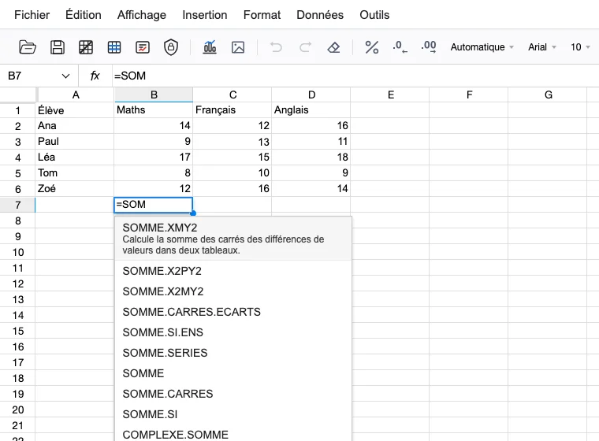
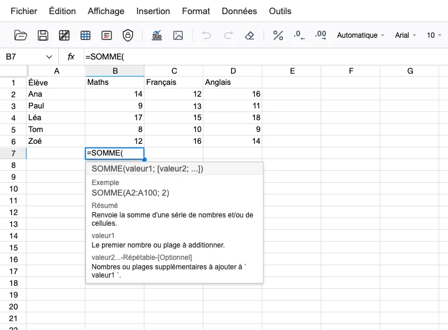
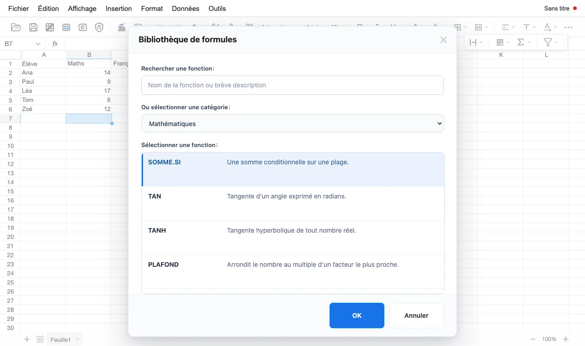

Les formules
Écrire une formule
Une formule commence par =. Elle contient des nombres, des textes entre guillemets, des références à des cellules, des opérateurs et des fonctions.
=B2*2
=(B2+C2+D2)/3
=MOYENNE(B2:B6)
="Total : "&SOMME(B2:B6)La cellule montre le résultat, la barre de formule la formule. Les cellules qui dépendent d’une cellule modifiée sont recalculées aussitôt.
En français, la virgule est décimale et le point-virgule sépare les arguments : =ARRONDI(3,14159; 2). Les noms de fonctions se tapent en minuscules ou en majuscules, en français ou en anglais : =somme(B2:B6) et =SUM(B2:B6) sont acceptés.
Désigner les cellules à la souris
Pendant la saisie d’une formule, un clic sur une cellule de la feuille insère son adresse, un glissé insère la plage. Chaque référence a sa couleur, dans la formule comme sur la feuille.
La complétion
Dès les premières lettres d’un nom, DocCells propose les fonctions qui les contiennent : ↑ ↓ pour parcourir, Entrée, Tab ou un clic pour choisir. Après la parenthèse ouvrante, une aide rappelle les arguments.


La somme automatique
écrit une somme. Sa flèche propose Somme, Moyenne, Nombre, Max, Min, et Toutes les formules : la bibliothèque, où l’on cherche une fonction par son nom, sa description ou sa catégorie.

Opérateurs
| Opérateur | Rôle |
|---|---|
+ - * / | quatre opérations |
^ | puissance : =2^10 |
% | pourcentage : =20%*B2 |
& | met bout à bout des textes : =A2&" "&B2 |
= <> | égal, différent |
< > <= >= | comparaisons |
( ) | priorité |
Les puissances passent avant les produits et quotients, puis viennent les sommes et les comparaisons. =-2^2 donne −4 (4 dans Excel).
Références
| Écriture | Désigne |
|---|---|
B2 | une cellule ; suit la recopie |
$B$2 | la même cellule, même recopiée |
B$2, $B2 | ligne fixe, colonne fixe |
B2:D6 | une plage |
B:B, 2:2 | une colonne, une ligne entière |
Feuille2!B2, 'Notes 2'!B2 | une cellule d’une autre feuille |
notes | une plage nommée |
Recopiée vers le bas, =B2*$B$1 devient =B3*$B$1, =B4*$B$1…
Conditions
=SI(B2>=10; "admis"; "refusé")
=SI(ET(B2>=10; C2>=10); "oui"; "non")
=SI.MULTIPLE(A2; "a"; 1; "b"; 2; 0)
=NB.SI(B2:B6; ">10")
=SOMME.SI(A2:A6; "Ana"; B2:B6)
=MOYENNE.SI(B2:B6; "<10")- Les valeurs logiques s’écrivent
VRAI()etFAUX(), avec les parenthèses. Elles s’affichent TRUE et FALSE. - Un critère est un texte :
">10","<>0","Ana". Les jokers*et?ne sont pas reconnus. - Une cellule vide se reconnaît par
=B2=""; elle n’est pas égale à 0.
Chercher dans un tableau
=RECHERCHEV("Léa"; A2:D6; 3; 0)
=INDEX(A2:A6; EQUIV(MAX(B2:B6); B2:B6; 0))La première cherche Léa dans la première colonne du tableau et rend la troisième ; le dernier argument 0 demande la valeur exacte. La seconde donne le nom de qui a la meilleure note.
Dates et heures
Une date est un nombre de jours, une heure une fraction de jour : placées dans des cellules, elles s’additionnent et se soustraient.
=A2+7
=A3-A2
=JOURS(A3; A2)
=JOURSEM(A2; 2)Une date donnée par DATE ou AUJOURDHUI doit passer par une cellule pour être additionnée : =AUJOURDHUI()+1 donne #VALUE!, mais si A1 contient =AUJOURDHUI(), =A1+1 donne demain. Le résultat est un nombre : lui donner un format Date.
Les erreurs
| Affiché | Cause |
|---|---|
#NAME? | nom inconnu : faute de frappe, fonction non calculée, VRAI sans parenthèses, texte sans guillemets |
#VALUE! | type inattendu : un texte là où il faut un nombre |
DIV/0 | division par zéro ou par une cellule vide |
#N/A | valeur introuvable (EQUIV, RECHERCHEV), ou GEO hors de DocGeo |
#REF! | cellule ou feuille qui n’existe pas |
#NUM! | nombre hors du domaine : RACINE(-1) |
#ERROR! | formule mal écrite, ou fonction non calculée |
SIERREUR remplace l’erreur d’une fonction (#N/A, #NUM!) : =SIERREUR(RECHERCHEV(E1; A2:D6; 2; 0); "absent"). Elle ne remplace pas celle d’un calcul (DIV/0, #VALUE!) : contre une division par zéro, tester le diviseur, =SI(B2; B3/B2; ""), qui vaut pour un zéro comme pour une cellule vide.